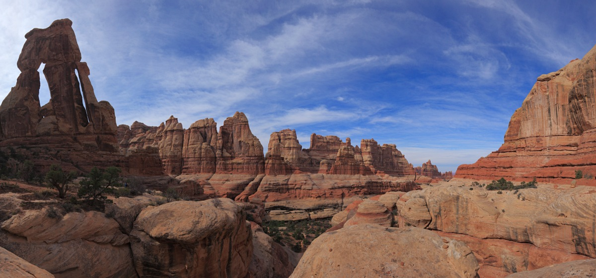

Elephant Canyon
More information
Elephant Canyon Information
The loop around Elephant Canyon and Squaw Canyon offers soaring canyon walls, banded needle formations, nearby access to Druid Arch, and great campsites. It’s hard to beat the Needles District of Canyonlands National Park for desert backpacking. This trail could be hiked as a day hike, but the side trips to Chesler Park and Druid Arch make it more than worth backpacking this loop. The trailhead for the Elephant Canyon and Squaw Canyon loop begins at the Squaw Flat Trailhead. To reach the trailhead, take highway 191 south from Moab. About 40 miles from Moab, turn right (west) on highway 211. Then just follow 211 for about 33 miles to the Canyonlands entrance. After paying the entrance fee and obtaining a backcountry permit at the visitor’s center if you plan to camp, continue along 211. After about 2.5 miles from the visitor’s center, turn left, following the signs to Squaw Flat Campground. Follow the signs to Loop A of the campground, and then park at the trailhead towards the back of the campground. The trailhead is located at 38.14360,-109.80371. There is a $10 fee to enter the park, or you can purchase the $80 America the Beautiful annual pass that will give you access to all national parks and other federal lands that charge an entry/parking fee (including Mirror Lake Highway). Source: backcountrypost.org
Join the chat!
// FORUM HERE